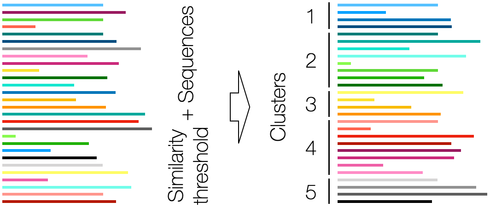
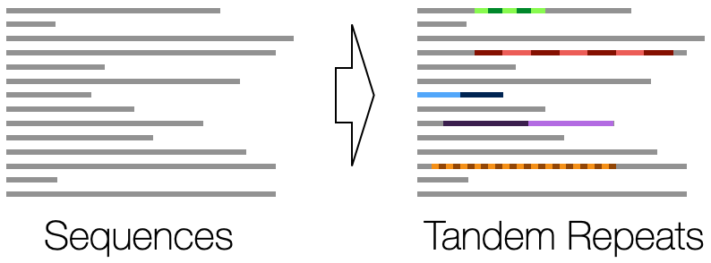
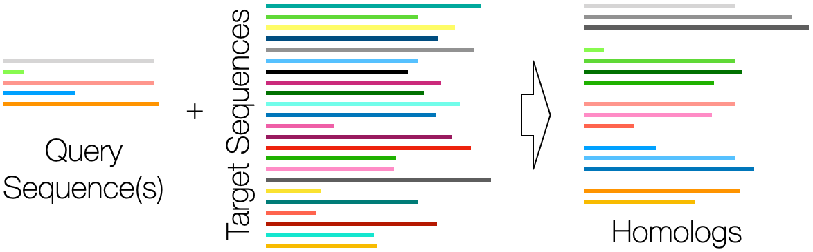

Homology Overview
DECIPHER has many powerful tools for detecting sequence homology. Several of these tools are showcased in the examples below.Why use DECIPHER for detecting sequence homology?
- DECIPHER can search for sequences orders of magnitude faster than BLAST and searches large datasets without loss of sensitivity.
- Clusterize provides linear time clustering with higher sensitivity than alternative programs. Clusterize can even cluster using a model of evolution or a substitution matrix.
- DetectRepeats can find tandem repeats in genome-scale sequences with very high accuracy.
- All of DECIPHER's search functionality is easy to use, parallelized, and scalable.
Clusterize - Find groups of sequences that are within a distance cutoff as quickly as possible.

Detect Repeats - Detect tandem repeats within genes, proteins, or genomes.

Find Chimeras - Find chimeric sequences composed of multiple different sequences, such as the sequence in the DECIPHER logo above.

Sequence Search - Rapidly identify regions of similarity between query and target sequences.
